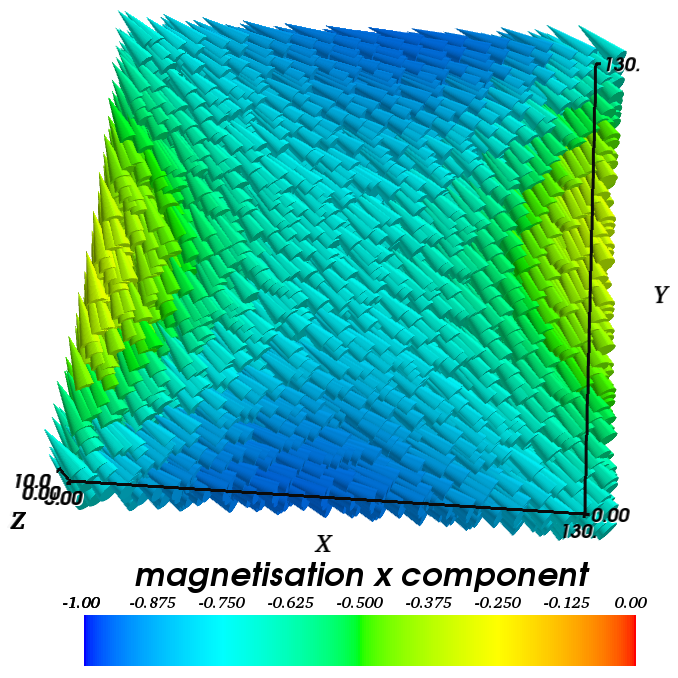
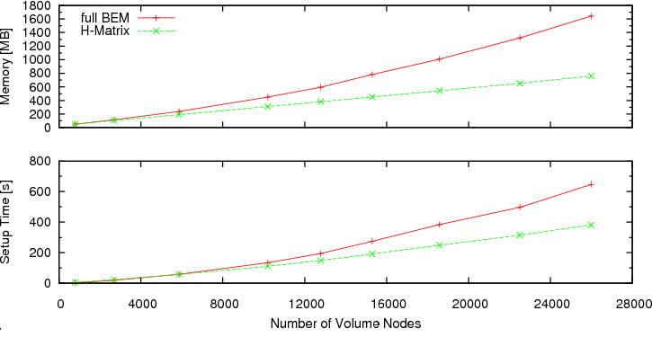

2.24. Compression of the Boundary Element Matrix using HLib¶
2.24.1. Hierarchical Matrices in Micromagnetism¶
Nmag uses the hybrid finite element method/boundary element method (hybrid FEM/BEM) to compute the demagnetisation field (as does Magpar). Not using this method, one would have to discretise a large part of space arround the magnetic structure (ideally all space). Using the hybrid FEM/BEM method, it is only necessary to discretise (and solve the equations for the demag field on that discretisation) those parts of space that are occupied by magnetic material.
A disadvantage of the hybrid FEM/BEM method is that it involves the assembly of a dense boundary element matrix B, whose number of elements scales quadratically with the number of surface nodes N of our finite element mesh, i.e. the matrix B has as many rows as there are surface nodes N in the mesh (and also as many columns).
This is in particular an issue when studying flat structures such as thin films. For example, imagine we model a thin film of side lengths 100 nm x 100 nm x 2nm. If we decide to double the side lengths to 200 nm x 200 nm x 2nm, then this roughly corresponds to an increase of surface node numbers N by a factor of 4. The matrix B will then grow in size by a factor 4^2=16 due to the doubling of the two side lengths by a factor of 2. In practice, the memory requirements of the matrix B often limit the size of a structure that can be modelled.
In order to improve the efficiency of the hybrid FEM/BEM, one can employ techniques which involve some kind of approximation of B, for example using hierarchical matrices.
The basic idea is to approximate submatrices of B by a data-sparse approximation where possible (within user-provided tolerance margins). In general the complexity of the storage requirements and execution time of simple operations like the matrix-vector product scale as O(N*log(N)), as compared to the quadratical costs N^2 using the standard matrix representation. For the use of HLib hierarchical matrices in micromagnetic simulations we are often mostly interested in the their reduced memory requirements.
The library HLib contains implementations of this hierarchical matrix methodology, and can be used with Nmag in order to run micromagnetic simulations in a more memory efficient way (see for example Knittel et al 105, 07D542 (2009), postprint pdf). .
2.24.2. Installation of HLib¶
In order to be able to use the HLib library and to obtain the HLib source code, you have to apply for an HLib licence as explained on http://hlib.org/license.html.
Once the HLib authors grant a licence, they will send their HLib tarball. Nmag will have to be compiled from source (see install from source) in the presence of this tarball to make use of the HLib matrix compression. (Nmag will compile happily in the absence of this file, and in that case the boundary element matrix is stored ‘in the normal way’ as a full matrix.)
We describe the required steps for this in detail. We assume you downloaded the HLib tarball and the Nmag tarball in your home directory ~/ (but any other subdirectory will work fine). Then, if you issue a ls command, you get something like:
me@mymachine:~/$ ls
HLib-1.3p19.tar.gz nmag-0.1-all.tar.gz
You can now untar the nmag tarball and enter the newly created directory:
me@mymachine:~/$ tar xzvf nmag-0.1-all.tar.gz
me@mymachine:~/$ cd nmag-0.1
Note that in this particular example we assume the Nmag version to be 0.1. For later versions, you’ll have to change the tarball name and the paths accordingly (e.g. nmag-X.Y.Z for version X.Y.Z). Inside the directory nmag-0.1 there is a directory called hlib-pkg and we need to copy (or move) the HLib tarball into this directory:
me@mymachine:~/nmag-0.1$ cp HLib-1.3p19.tar.gz hlib-pkg/
You can now compile Nmag with HLib support in the usual way:
me@mymachine:~/nmag-0.1$ make
The build system should recognise that the hlib-pkg directory contains a tarball and should prompt you asking what to do:
me@mymachine:~/nmag-0.1$ make
bash ./patches/hlib/hlib-untar.sh ./hlib-pkg HLib-1.3p19.tar.gz && \
rm -f .deps_hlib_patch && make .deps_hlib_install; true
_____________________________________________________
It seems you want to compile Nmag with HLib support
I'll need your confirmation in order to proceed...
I found ./hlib-pkg/HLib-1.3p19.tar.gz
Is this the HLib tarball you want to use? (yes/no) yes
Type yes and ENTER. The build system should untar the HLib tarball, it should patch it (HLib needs to be patched in order to be usable by Nmag) and it should install it in the right location with respect to the Nmag libraries. If all goes well, you should get an installation of Nmag which is capable of using HLib for the compression of the BEM matrix.
As you see, the only additional step which is required with respect to the normal procedure for compiling Nmag from source, is to put the HLib tarball inside the directory nmag-0.1/hlib-pkg.
The current nmag release requires Hlib version 1.3p19, to support HLib matrix compression.
2.24.3. Testing the HLib BEM Matrix compression¶
There is a test target make checkhlib which tests whether a demag field can be computed using the HLib and compares this with the result of the same calculation using a full BEM. If the deviations become large, the test will fail. To run the test, do
me@mymachine:~/nmag-0.1$ make checkhlib
The test should take less than 5 minutes. If it passes, then it appears that the hlib is used, and produces quantitatively appropriate approximations of the true solution.
2.24.4. Using HLib example 1: Demagnetisation Field of a Sphere¶
The properties of a hierarchical matrix depend much on the settings of different parameters and on the particular algorithm used to create the low-rank approximations. In Nmag, we only use the HCA II algorithm, which seems to be the most reliable amongst the commonly used algorithms, being still very efficient (see for example Knittel et al 105, 07D542 (2009), postprint pdf).
The performance and accuracy of the HCA II algorithm can be tuned by providing a number of parameters, which are collected inside a HMatrixSetup object. A default HMatrixSetup object is provided, where a reasonable choice of these parameters is made. The default parameters can be overriden by users.
We point the reader to the documentation of the HMatrixSetup class for a list and description of all avaliable parameters. The next example shows how to use HLib with the default values for the setup of the BEM matrix.
2.24.4.1. Using HLib with default parameters¶
The Nmag script sphere_hlib.py shows how Nmag can be used in order to compute the demagnetisation field within a sphere with a radius of 50 nm.
import nmag import time from nmag import SI # When creating the simulation object, specify that the BEM hmatrix should be # set up by using the default parameters. sim = nmag.Simulation(phi_BEM=nmag.default_hmatrix_setup) # Specify magnetic material, parameters chosen as in example 1 Py = nmag.MagMaterial(name="Py", Ms=SI(1e6, "A/m"), exchange_coupling=SI(13.0e-12, "J/m")) # Load the mesh sim.load_mesh('sphere.nmesh.h5', [('sphere', Py)], unit_length=SI(1e-9, 'm')) # Set the initial magnetisation sim.set_m([1,0,0]) # Save the demagnetisation field sim.save_data(fields=['H_demag']) # Probe the demagnetisation field at ten points within the sphere for i in range(-5,6): x = i*1e-9 Hdemag = sim.probe_subfield_siv('H_demag', [x,0,0]) print "x=", x, ": H_demag = ", Hdemag
In this first example, we use default parameters for setting up the BEM matrix by passing the object nmag.default_hmatrix_setup to the Simulation object:
sim = nmag.Simulation(phi_BEM=nmag.default_hmatrix_setup)
This command specifies that the BEM matrix should be set up using the default parameters in nmag.default_hmatrix_setup. (The actual values of the parameters can be visualised on the screen by simply printing the object with import nmag; print nmag.default_hmatrix_setup.)
When running the simulation sphere_hlib.py using the usual command:
nsim sphere_hlib.py --clean,
it should print out the demagnetisation field at ten points along the line (x,0,0):
x= -5e-09 : H_demag = [-333060.61988567741, -16.426569556599606, -63.649046900628299]
x= -4e-09 : H_demag = [-333061.67213255615, -17.81158234138228, -65.112039406898973]
x= -3e-09 : H_demag = [-333062.69422596297, -19.401486521725044, -66.015626464953897]
x= -2e-09 : H_demag = [-333062.72991753434, -20.940683675745074, -66.988296036794026]
x= -1e-09 : H_demag = [-333061.60282647074, -22.420106762492924, -68.042400926888646]
x= 0.0 : H_demag = [-333060.29023012909, -23.736721821840622, -68.984395930340639]
x= 1e-09 : H_demag = [-333058.66039082204, -24.758745874347209, -69.6797361890888]
x= 2e-09 : H_demag = [-333055.87727687479, -24.635979967196079, -70.705429412122513]
x= 3e-09 : H_demag = [-333054.17167091055, -24.9868363963913, -73.501799477569747]
x= 4e-09 : H_demag = [-333052.78687652596, -25.388604442091431, -76.097088958697071]
x= 5e-09 : H_demag = [-333051.43416558538, -25.507782471847442, -77.792885797356391]
As in Example: Demag field in uniformly magnetised sphere of our guided tour, we should obtain a constant magnetic induction of about [333333,0,0] [A/m]. Deviations from that value can be mainly ascribed to the discretisation errors of the finite element method (rather than the error due to the approximation with hierarchical matrices). To see this, we use sphere_fullBEM.py which carries out the same calculation but uses the normal full BEM. It reports:
x= -5e-09 : H_demag = [-333065.71403658605, -5.2685406972238447, -55.70105442854085]
x= -4e-09 : H_demag = [-333067.37484881631, -4.2116117445407726, -57.778611300679266]
x= -3e-09 : H_demag = [-333068.83107133937, -3.7372238611028603, -59.825445387210245]
x= -2e-09 : H_demag = [-333069.28217968839, -2.9635031726006642, -62.513814422201456]
x= -1e-09 : H_demag = [-333067.6639511605, -1.5730916838594211, -66.546659227740889]
x= 0.0 : H_demag = [-333066.04572263273, -0.18268019511817793, -70.579504033280344]
x= 1e-09 : H_demag = [-333064.22835497675, 0.79797869001455679, -74.851480234723581]
x= 2e-09 : H_demag = [-333060.20872696047, 2.9088218728650852, -77.0823444044496]
x= 3e-09 : H_demag = [-333056.59267071093, 5.064110260421554, -80.187548021318634]
x= 4e-09 : H_demag = [-333052.97641355224, 7.2199889195136837, -83.294534914159939]
x= 5e-09 : H_demag = [-333051.27043353132, 9.4396856537516776, -85.662174893158024]
This shows that the error introduced by the HLib is of the order of 10 in 333333 (in this example). Note that the y and z component theoretically should be zero (for both calculations: with and without HLib), and that the error we see there (of the order of 60/333333 in the z-component) is coming from approximating the spherical shape with tetrahedra, and approximating the magnetisation with a piecewise linear function (not primarily from using the HLib approximation of the BEM).
2.24.4.2. HLib Memory usage¶
Nmag will also provide information on the memory requirements for the hierarchical matrix. First it will print to stdout (and here exceptionally not write to the log file) the following lines to the screen, which are each preceded by HLib:
HLib: Memory footprint of hierarchical matrix: 10.523720 MB.
HLib: Equivalent full matrix would require: 98.273628 MB.
HLib: The compression rate is 10.71%
The first line states the amount of memory required for the storage of the hierarchical matrix, the second one states the equivalent memory requirements when using the full boundary element matrix, and the last line gives the corresponding compression rate. Furthermore Nmag creates the file memory_info.dat, which in our example looks like:
Number of surface nodes: 3589
Size of hierarchical matrix: 10.52 MB
Total size of inadmissible leaves: 1.40 MB
Total size of admissible leaves: 8.96 MB
While the first two lines should be relatively self-explanatory, the third line states the total amount of memory needed to store the matrix blocks which cannot be approximated, while the fourth line gives the equivalent number for the approximated matrix blocks. Additionally, one can obtain the memory used for the hierarchical tree structure itself, by computing the difference between the size of the hierarchical matrix and the sum of the total sizes of the admissible and inadmissible leaves.
2.24.4.3. Changing the Parameters of HLib¶
Let us assume we want to run the simulation of the last section again, but this time we would like to reduce the time needed to assemble our hierarchical matrix. To achieve this, we coarsen the hierarchical tree by increasing the parameter nmin to 50, reassign the parameter eps_aca to 1e-5 in order to decrease the accuracy of the HCA II algorithm, and reduce the accuracy of the numerical integration by setting the parameter quadorder to 2.
To use non-default settings in a new script sphere_hlib2.py we add one line to create an HMatrixSetup object
#create an HLib object
hms = nmag.HMatrixSetup(nmin=50, eps_aca=1e-5, quadorder=2)
This object is then passed to the Simulation object:
sim = nmag.Simulation(phi_BEM=hms)
In order to make the time measurement you can just run the nsim command with a preceding ‘time’, i.e.
time nsim sphere_hlib2.py --clean
do the same with the sphere_hlib.py script, and compare the execution times. Alternatively, search for the string like “Populating BEM took 25.094362 seconds” in the log file/output. The execution time of the second script should be smaller (see also Using HLib Example 2: Thin Films).
For completeness: the Hdemag values computed with this script are:
x= -5e-09 : H_demag = [-333060.73884748813, -5.7471691393211453, -56.164777361260889]
x= -4e-09 : H_demag = [-333062.34355895646, -4.6973695734449556, -58.19523338342605]
x= -3e-09 : H_demag = [-333063.7357911733, -4.2543955018989577, -60.199068292632305]
x= -2e-09 : H_demag = [-333064.14913635491, -3.5107100192801424, -62.841949236542568]
x= -1e-09 : H_demag = [-333062.54691465426, -2.1473409122582736, -66.824386136704007]
x= 0.0 : H_demag = [-333060.94469295366, -0.78397180523640564, -70.806823036865438]
x= 1e-09 : H_demag = [-333059.14023403701, 0.15188988623380831, -75.030255790251871]
x= 2e-09 : H_demag = [-333055.17692864774, 2.2289146769013355, -77.213961296827563]
x= 3e-09 : H_demag = [-333051.63216875959, 4.3434799953307275, -80.273150211395659]
x= 4e-09 : H_demag = [-333048.08718075219, 6.4586908275326955, -83.334113807086638]
x= 5e-09 : H_demag = [-333046.47566667694, 8.6375699926922742, -85.648195356633963]
2.24.5. Using HLib Example 2: Thin Films¶
In this example we consider square thin films with a thickness of 10 nm (in z-direction), and a varying edge length (in x and y directions) between 20 and 130 nm . The magnetisation within those films is initially homogeneously aligned and points out-of-plane. We then use Nmag’s relax routine in order to evolve the magnetisation field to an energetically (meta-)stable state.
In order to estimate the efficiency benefits of hierarchical matrices, the simulations are executed twice: (i) with and (ii) without hierarchical matrices. Optimal damping is ensured by setting the damping constant of the LLG equation to 1. To increase the efficiency of the relaxation the tolerance of the time-stepper has been increased to 1e-5 (see Example: Timestepper tolerances).
For our estimation of the efficiency we measure the time needed for the setup of our simulation (basically the time for populating the finite element and boundary element matrices), the time for relaxing the system, and the memory consumption at the end of the simulation, which should be roughly equal to the maximal value throughout the simulation.
For each film size and either use of the full BEM or the approximation through hierarchical matrices, a separate nsim script file (thinfilm20_full.py, thinfilm40_full.py, thinfilm60_full.py, ..., thinfilm20_hlib.py, etc.) has been written. It is important to start every simulation as a single process (by calling nsim thinfilm20_full.py --clean etc.), so that there are no overlaps in the memory access of different simulations. From every script a routine run_simulation which is imported from a local nsim module simtools.py, starts a simulation specified by its arguments (name of the simulation, name of the mesh file, name of hlib object in case hierarchical matrices are used, and the tolerance for the time integrator) and returns the number of nodes of the mesh, the simulation’s memory consumption and the setup- and relaxation times. These values are then written to a file timings_hlib.dat or timings_full.dat, respectively.
Beside extracting the information on the performance, it is also important to check, whether simulations using the full boundary element matrix and a hierarchical matrix approximation actually do the same, and that the simulated behaviour is physically correct.
Looking at the spatially averaged magnetisation we find a very good agreement between both simulation types (example given for the film with an edge length of 100nm):

The magnetisation field moves from its out-of-plane configuration into the plane and relaxes into a high remanent state, which is aligned along the diagonal of the square base. The plot below shows a 3d visualisation of the relaxed magnetisation field (obtained with Mayavi2) for a thin film with an edge length of 130 nm.
We have run the simulations on a machine with an AMD Athlon(tm) 64 X2 Dual Core Processor 3800+, using only one core. The graphs below show the results of our efficiency test of hierarchical matrices. It can be seen that the memory requirements are reduced considerably. While the consumed memory increases (almost) linearly with the number of surface nodes N for the calculation with hierarchical matrices, the increase is of a higher order (O(N4/3)), when using the accurate boundary element matrix B. The enhanced scaling behaviour allows for simulation of larger ferromagnetic structures. The graph on the memory consumption should enable users to estimate, whether they can simulate a certain structure with Nmag+HLib and the available hardware.
Besides the savings in memory, hierarchical matrices also reduce the time needed for the simulation setup considerably (see the bottom graph).